Ischia
Forio’da konaklamaCitara PlajıSant’AngeloSıcak su kaynakları
€430–€500 pp
Gerçek tatil hissi için en iyisi: ada otobüsleri, gün batımı yüzmeleri, büyük plajlar ve doğal sıcak su kaynakları.
Üç gece. Dört gün. Deniz, gün batımları, plajlar, tekne keyfi ve kişi başı yaklaşık €450–€500 civarında kalan bir bütçe.
Sürpriz bir çift seyahati için küçük ama havalı bir karar sitesi: A seçeneği Ischia’da ada tatili. B seçeneği Doğu Sicilya’da romantik bir deniz ve tekne kaçamağı. İkisi de çok para harcamadan güzel hissettirsin diye hazırlandı.
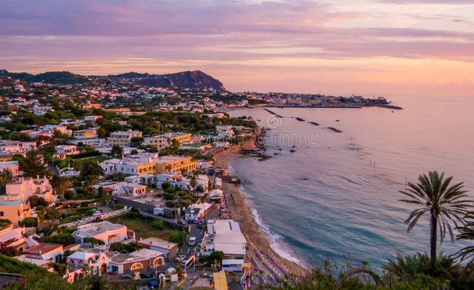
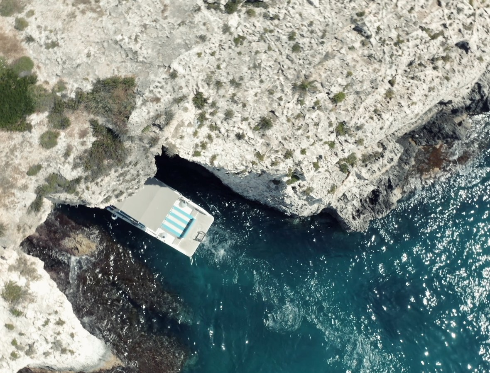
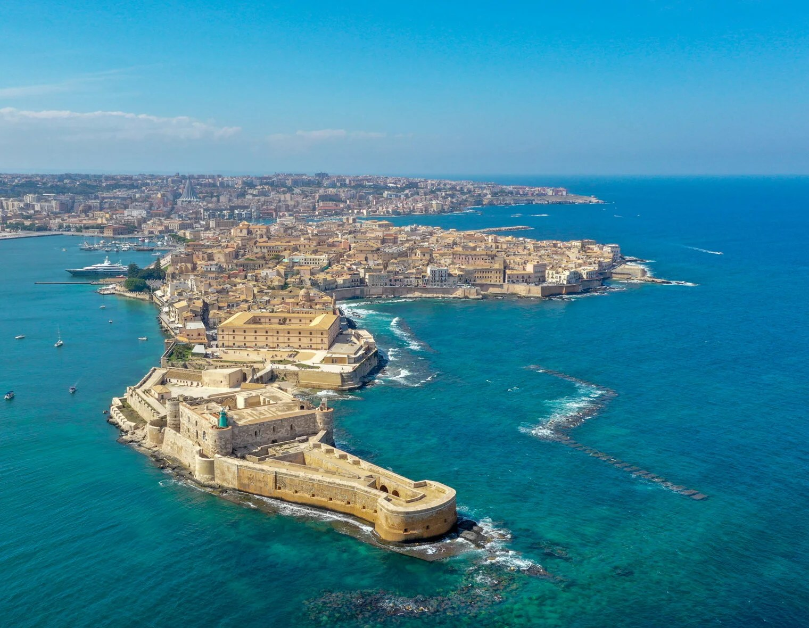
Puglia’yı çıkardım; sevgiliye sürpriz için en romantik, en denizli ve en özel hissettiren iki rotayı bıraktım.
Gerçek tatil hissi için en iyisi: ada otobüsleri, gün batımı yüzmeleri, büyük plajlar ve doğal sıcak su kaynakları.
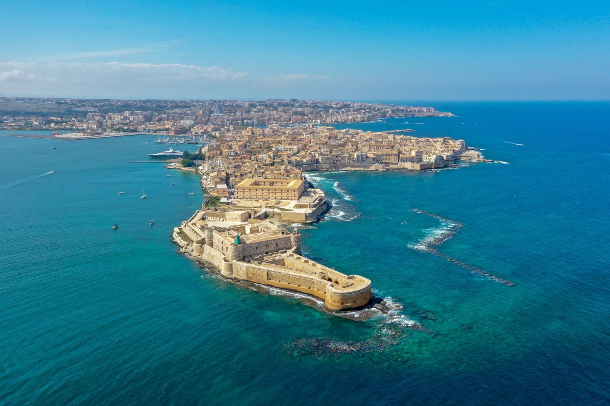
Romantizm + çeşitlilik için en iyisi: yürüyerek gezilen akşamlar, tekneyle mağaralar, gerçek plaj günü ve kolay havalimanı transferi.

Konaklama yeri: Forio, adanın daha bütçe dostu tarafı; gün batımları güzel ve Citara’ya ulaşım kolay. Bu seçenek en çok “gerçekten tatile geldik” hissi veriyor: plaj sabahları, romantik köy manzaraları, su taksisi havasında bir gün ve unutulmaz sıcak su finali.
Napoli’ye varış, limana geçiş, feribot veya hızlı tekneyle Ischia’ya geçiş, sonra Forio’ya yerleşme. Zaman kalırsa Citara Plajı’nda ya da Chiaia tarafında kolay bir yüzme, ardından deniz kenarında akşam yemeği.
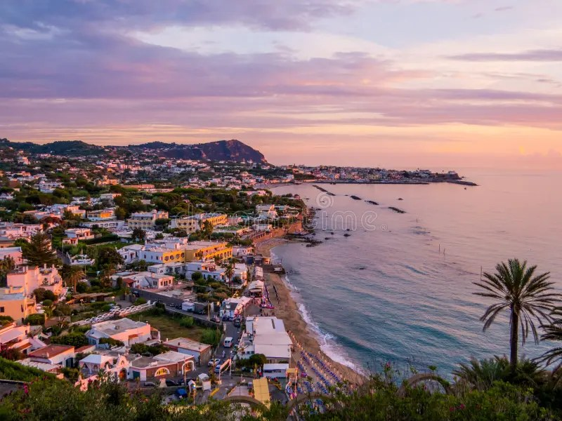
Yüzmeli, şezlonglu ve rahat bir plaj günü. Kendimize küçük bir ödül vermek istersek termal havuzlar ve deniz erişimi için Poseidon’u ekleriz; bütçeyi düşük tutmak istersek pas geçeriz.
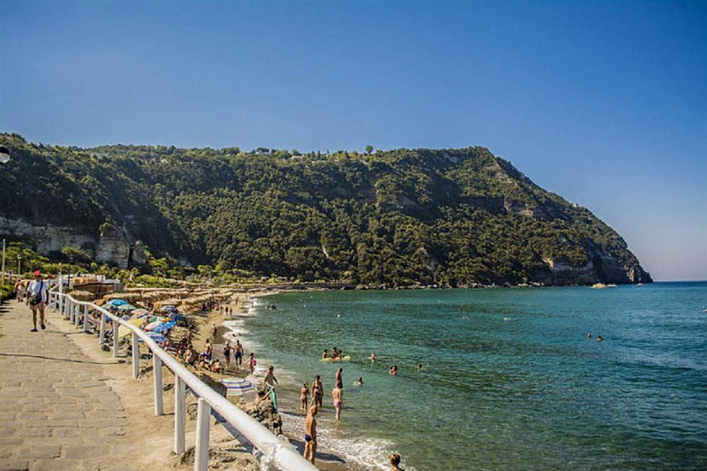
Güne sevimli ve yayalaştırılmış gibi hissettiren Sant’Angelo köyüyle başlarız, sonra günün sıcak kısmını Maronti Plajı’nda geçiririz. Çalışıyorsa su taksisiyle geçmek günü daha özel hissettirir.
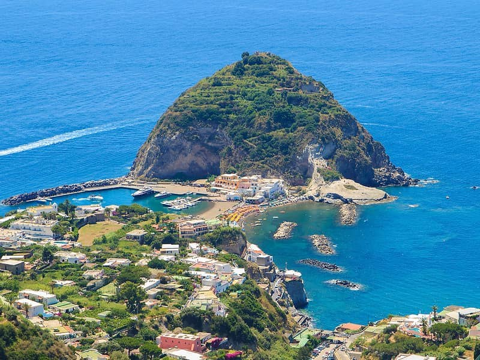
Deniz kenarında kayalık sıcak su havuzları için Sorgeto’yu seçeriz ya da dönüş feribotundan önce Forio yakınlarında son bir yüzmeyle sabahı rahat tutarız.
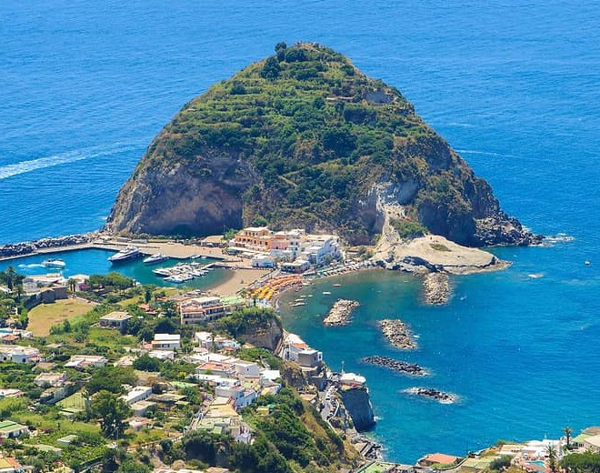

Konaklama yeri: Ortigia / Siraküza. Bu seçenek bütçe açısından daha rahat: romantik akşamlar, deniz mağaraları ve yüzme noktaları çevresinde tekne turu, sonra Fontane Bianche veya Arenella’da kumlu plaj günü.
Katanya’ya uçuş, Siraküza’ya transfer, otele yerleşme ve Ortigia’da gezme. Erken varırsak kayalık yüzme platformlarından denize gireriz; sonra gün batımı, akşam yemeği ve gelato.

Ortigia manzaraları, deniz mağaraları, kıyıda yüzme ve arabasız macera hissi için sabah ya da gün batımı tekne turu ayarlarız.
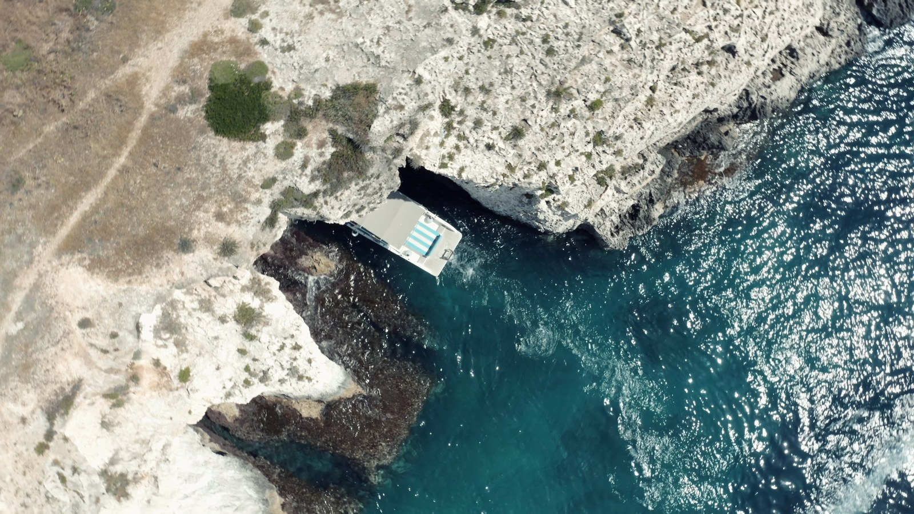
Gerçek kumlu plaj günümüz. Erken gideriz, basit tutarız, yüzeriz, dinleniriz ve son gece güzel bir yemek için Ortigia’ya döneriz.
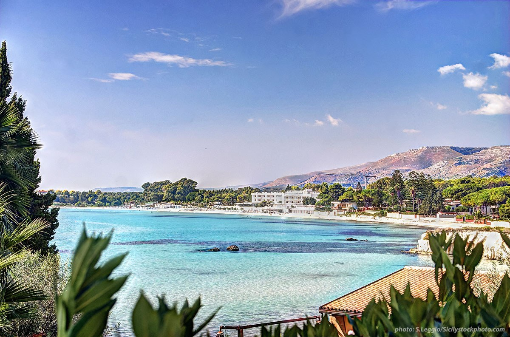
Uçuş erkense kahvaltı ve son Ortigia deniz manzarasıyla basit tutarız. Uçuş geçse Katanya yakınında volkanik kayalık kıyılar için Aci Trezza / Aci Castello eklenebilir.
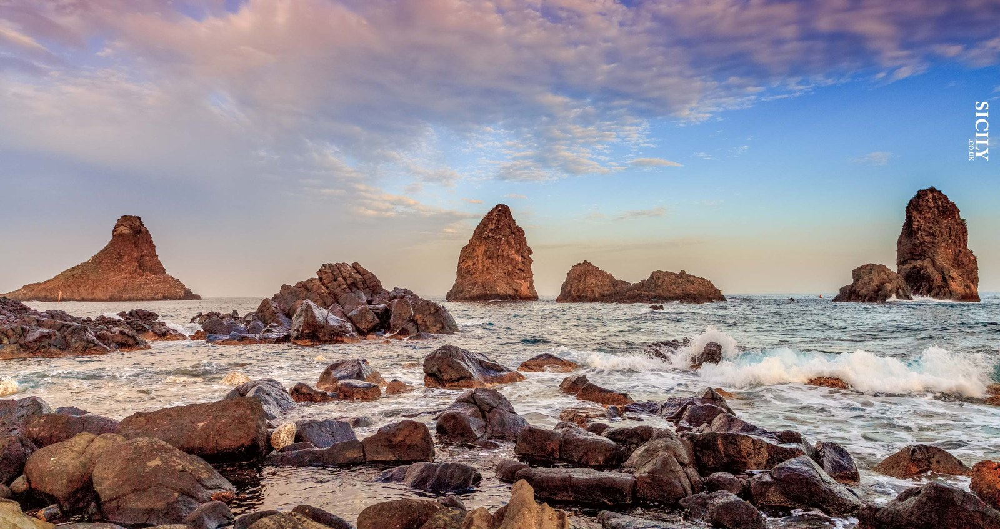
En romantik “ada tatili” hissini istiyorsak: Ischia’yı seçelim.
En güvenli bütçe ve en kolay lojistik istiyorsak: Doğu Sicilya’yı seçelim.
Daha çok gizli bir kaçamak gibi hissettiriyor: feribotla varış, Forio gün batımları, Sant’Angelo, Maronti Plajı ve Sorgeto sıcak suları. Bütçeyi korumak için yemekleri sade tutarız ve sadece bir ücretli “kendimizi şımartma” aktivitesi yaparız.
Beni Ischia’ya götürYine güzel ve romantik, ama daha ucuz ve daha kolay. Ortigia akşamları + tekne turu + gerçek bir plaj günü, sadece dört güne çok fazla çeşitlilik sığdırıyor.
Bana Sicilya’yı göster